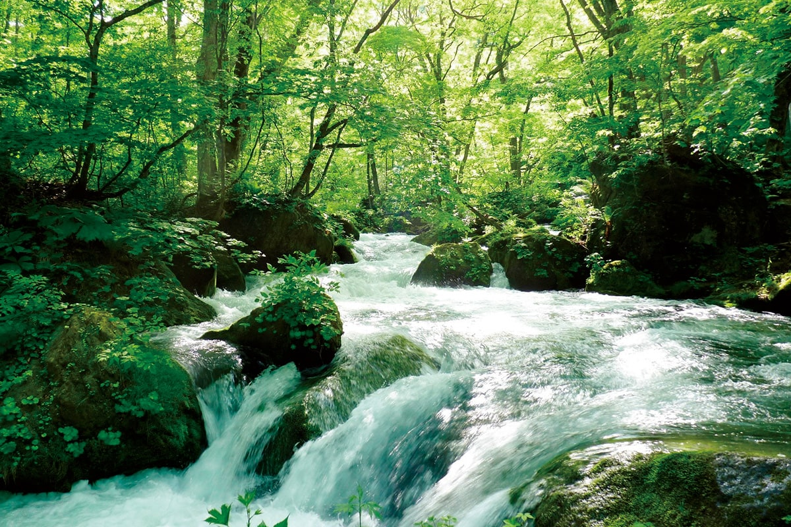
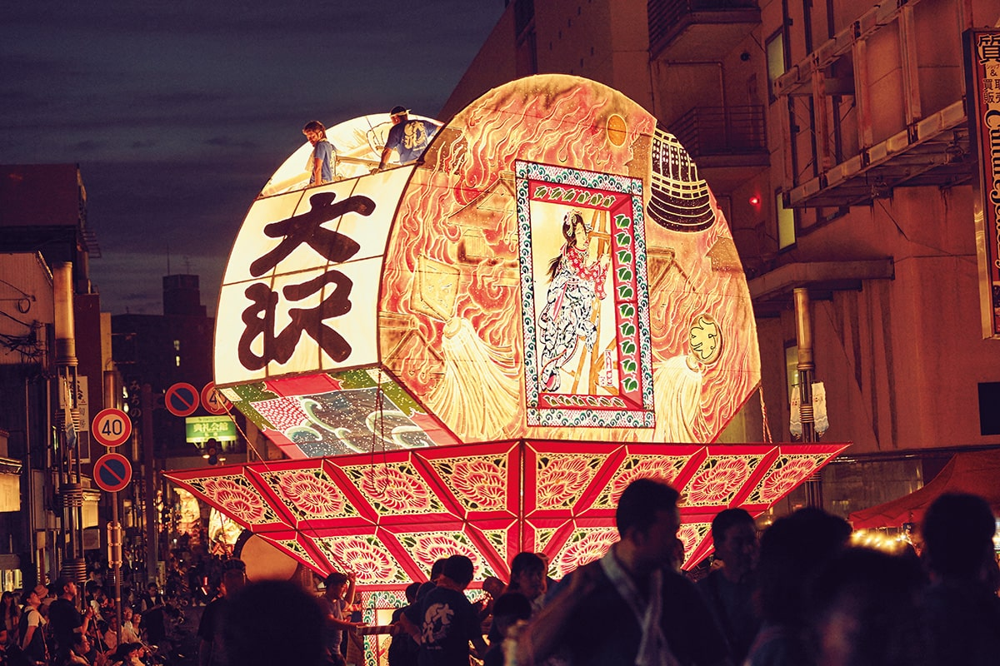
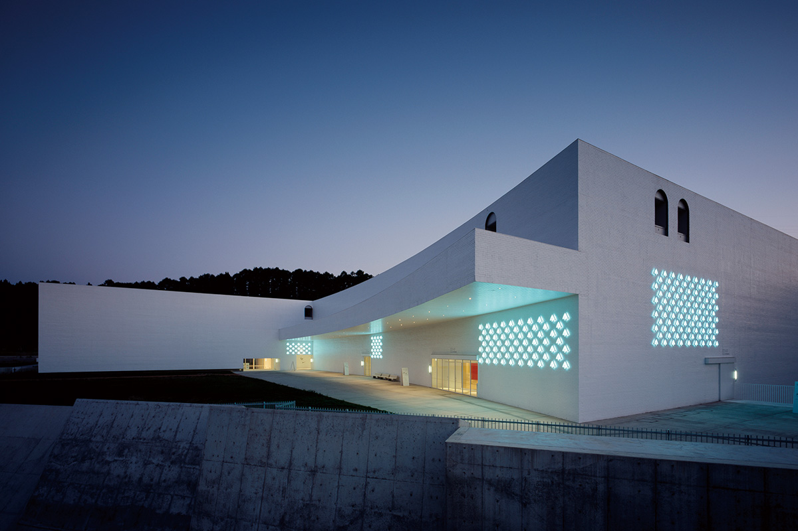
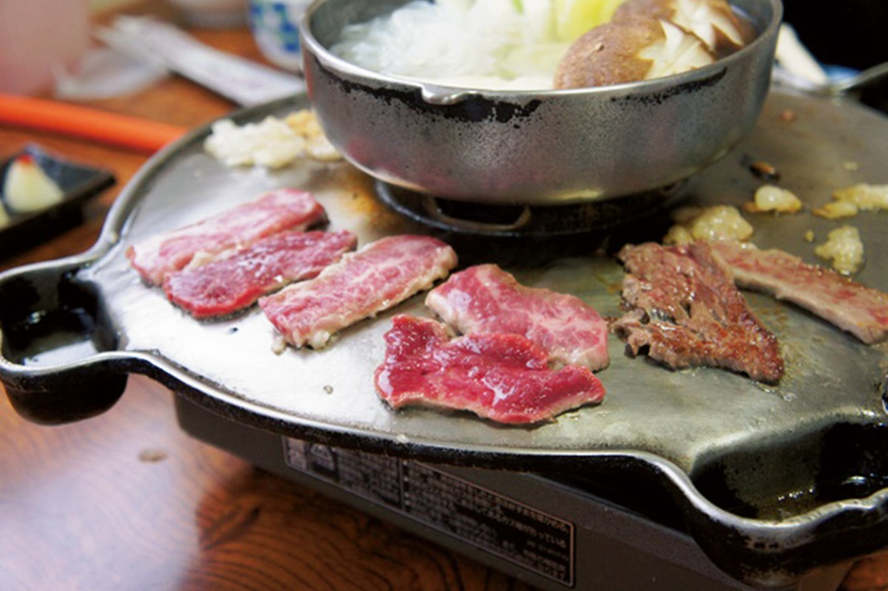
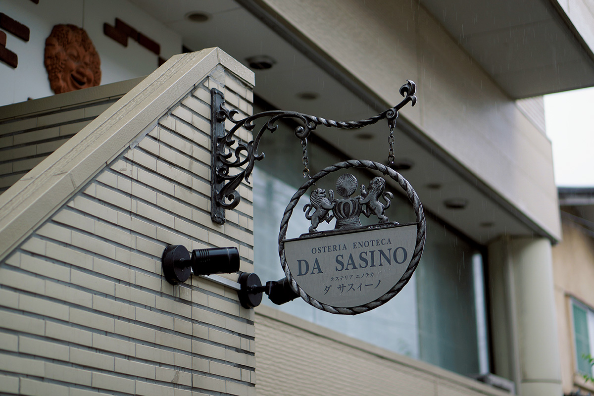
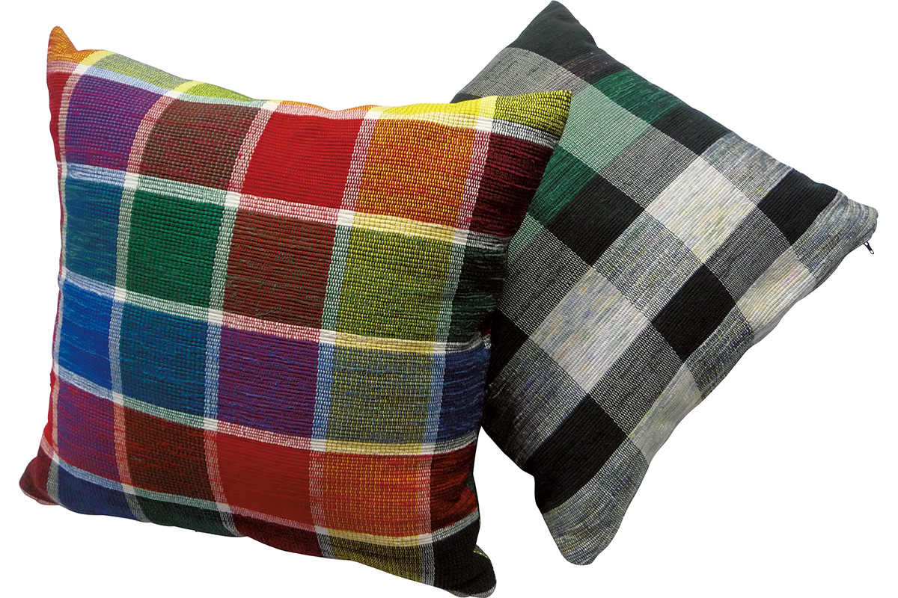
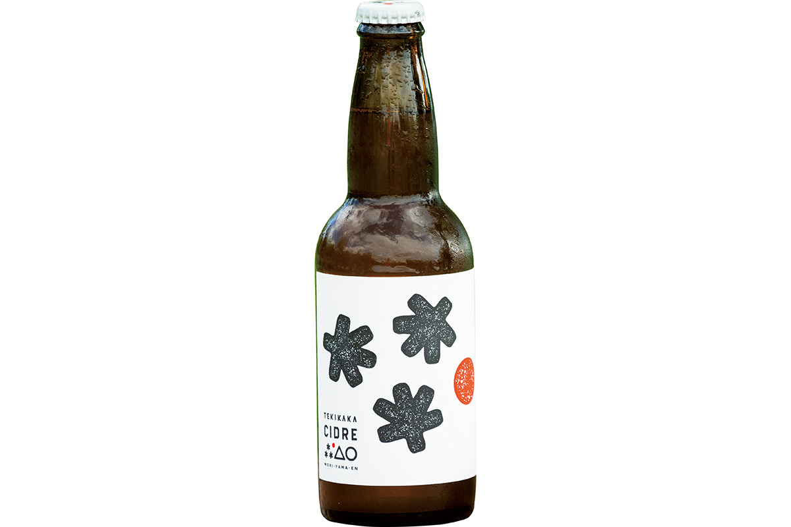
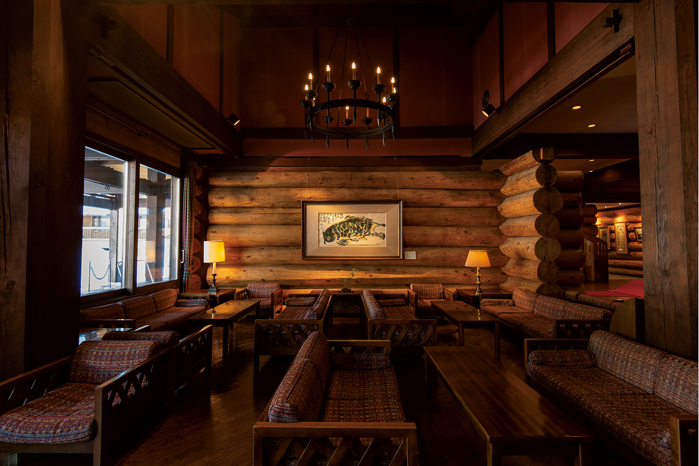

Префектура Аомори
Аомори: поток Оирасе, кирпичный музей и фонари на ночной улице

Поток перекатывается через камни, поросшие густым мхом, а сверху на воду опускаются ветви зелёного леса.
Самый северный край главного острова: река бежит среди мха, в кирпичном складе открыли музей, а в августе по городу идут огромные светящиеся фонари. Рассказываем, за чем ехать в Аомори.
О префектуре
Край лесов, яблок и тунца
Аомори лежит у северной оконечности главного острова: на юге стоят озеро Товада и горы Сираками, а с трёх остальных сторон край омывает море. Земля здесь плодородная, поэтому кроме яблок и другой сельской продукции отсюда везут и знаменитого тунца из Омы.
Раньше эта земля называлась Муцу. В эпоху Хэйан её подчинил себе центральный двор, и отсюда началось настоящее управление краем. В конце XVI века род Оура, позже взявший имя Цугару, основал вокруг замка Хиросаки своё владение, а после отмены княжеств в эпоху Мэйдзи появилась префектура Аомори. Имя ей дала сосновая роща, которая стояла там, где теперь центр города: зимой ветер выдувал из неё снег, поэтому сосны оставались зелёными круглый год.
В 2020 году в Хиросаки открыли музей в старом кирпичном складе, и это первая работа архитектора Танэ Цуёси в Японии. На следующий год музей города Хатинохэ должен открыться заново под новым именем, и внимание к здешней художественной жизни растёт.
Что посмотреть
Ущелье, которое идут пешком
Поток Оирасе
От деревни Конокоти на озере Товада до Якиямы вдоль реки Оирасе тянется ущелье длиной около четырнадцати километров. С пешеходной тропы видны водопады, и особенно известен участок, который называют «потоком Асуры»: вода там идёт по камням ступенями и шумит так, что разговор приходится повышать голос.
- Справки
- общий информационный пункт озера Товада
- Телефон
- +81 176-75-2425
Что ещё посмотреть
- Скалы Буккэ-ура, белые скалы над морем
- Озеро Цутанума, лесное озеро с отражением деревьев
- Ледяные деревья Хаккоды, зимний лес, закованный в наледь
Праздники
Фонари выше человеческого роста
Праздник Нэбута в Аомори
Этот летний праздник идёт больше трёхсот лет. По улицам везут огромные украшенные повозки-фонари, натянутые на каркас и подсвеченные изнутри, а рядом идут танцоры и музыканты. За шесть дней праздник собирает больше двух миллионов гостей.

- Период
- начало августа
- Место
- центр города Аомори, порт и парк Аоиуми
Другие праздники
- Праздник сакуры в Хиросаки, цветение в парке вокруг замка
- Праздник нэпута в Хиросаки, веера-фонари на улицах
- Осенний праздник в Товаде, городское шествие с музыкой
Музеи и архитектура
Стеклянный дом у древних ям
Художественный музей префектуры Аомори
Здание спроектировал Аоки Дзюн. Музей стоит рядом с неолитическим городищем Саннай-Маруяма, и замысел архитектора подсказали сами раскопы: помещение прорезано внутрь геометрическими линиями, поэтому пространство читается как продолжение земли под ногами.

- Адрес
- 185 Yasuta-Konno, Aomori, Aomori
- Телефон
- +81 17-783-3000
- Сайт
- aomori-museum.jp
Что ещё посмотреть
- Музей современного искусства в Товаде, дома-залы среди улицы
- Музей в кирпичном складе Хиросаки, старый склад под музей
- Музей Корэкава, находки неолитического времени
Местная кухня
Ужин на железной плите
Кухня юга префектуры
На юге края мясо готовят прямо за столом: тонкие ломтики выкладывают на железную плиту и подрумянивают, а рядом греется котелок с супом, грибами и лапшой. Такая подача идёт от дорожной кухни, когда в одном котле варили всё, что было под рукой.

Что ещё попробовать
- Рамэн с мисо, карри и молоком, смелое сочетание из Аомори
- Каяки, густая похлёбка с мясом и овощами
- Суп с рисовыми крекерами, сенбэй в бульоне вместо лапши
Где поесть
Итальянский дом в Хиросаки
«Остерия Энотека Да Сасино»
Этот ресторан держит шеф, который сам выращивает овощи, фрукты и виноград для вина, поэтому в меню каждый раз попадает то, что поспело на его поле. Отдельная гордость здесь, это собранные по стране старые вина, которые шеф ищет сам.

- Адрес
- 56-8 Hon-cho, Hirosaki, Aomori, 2nd floor
- Телефон
- +81 172-33-8299
- Часы
- с 18:00 до 24:00, последний заказ в 21:00
- Выходные
- воскресенье
- Сайт
- dasasino.com
Ремёсла
Ткань из разорванных полос
Ткачество сакиори на юге края
Здесь ткут по старому способу: ношеную ткань рвут на узкие длинные полосы и заново вплетают в новое полотно. Так из старой одежды получается плотная, тёплая и мягкая материя, а современные мастера делают из неё подушки, сумки и мелкие вещи для дома.

- Справки
- общество сохранения ткачества сакиори
- Телефон
- +81 176-20-8700
- Сайт
- sakiori.jp
Что привезти
Сидр из прореженных яблок
Сидр текикака
В саду Морияма придумали использовать яблоки, которые снимают с ветвей, пока они ещё не поспели: так делают, чтобы плодов на дереве осталось меньше и они выросли сладкими. Эти ранние яблоки здесь впервые в мире превратили в сидр, и напиток получился с горчинкой и кислотой. Бутылка стоит 627 иен.

- Телефон
- +81 172-78-3395
- Сайт
- moriyamaen.jp
Где остановиться
Дом из бревна в тихом лесу
Гостиница «Хаккода»
Отель стоит в тихом лесу у подножия гор Хаккода, и это одно из самых больших деревянных зданий в западном стиле в стране. Внутри пахнет местным деревом хиба, а из купальни и комнат открывается вид на старый буковый лес.

- Адрес
- 1-1 Arakawa-Minamiarakawayama, Aomori, Aomori
- Телефон
- +81 17-728-2000
- Комнат
- 55, из них 39 двухместных
- Цена
- от 27 000 иен за ночь с двумя приёмами пищи, налоги и банный сбор отдельно
Местный диалект
Как здесь говорят «очень вкусно»
- тагэ, мээнаочень вкусно
- катякутя нэкругом беспорядок
- на, дзамбо каттэ кита бэты подстригся
- мотёкотээ бэ на, ямэро дзящекотно, перестань
Рекорды
В чём Аомори первый
- №1 туннель Сэйкан: самый длинный и самый глубокий железнодорожный туннель в стране
- №1 сбор чёрной смородины: первое место
- №1 число общественных бань на человека: первое место
- №1 доля выработки от новых источников энергии: первое место
Вопросы и ответы
Что ещё спрашивают об Аомори
Какой рамэн придумали в Аомори по просьбе школьника?
Рамэн с мисо, карри и молоком. В 1970-е годы в заведении, которое привезло мисо-рамэн из Саппоро, школьник попросил положить в лапшу молоко и карри, и с этой просьбы началась здешняя версия блюда.
Какая рыба объявлена рыбой префектуры, хотя все вспоминают тунца?
Камбала. Хотя тунец из Омы и Фукууры известен далеко за пределами края, именно по камбале Аомори держит первое место в стране и по улову, и по числу выпущенных мальков. Она выросла в холодном северном море, поэтому мясо у неё плотное и ценится как самое качественное.
Справочник
Аомори в цифрах
Общие сведения
| Административный центр | Аомори |
| Муниципалитеты | 10 городов, 22 посёлка, 8 деревень |
| Площадь | 9646 кв. км |
| Население | 1,26 млн человек |
| Плотность населения | 130,9 человека на кв. км |
| Туристов в год | 4,69 млн |
| Дерево префектуры | туёвик |
| Цветок префектуры | цветок яблони |
| Птица префектуры | лебедь |
Климат
| Средняя температура | +11,0 |
| Максимум | +27,4 |
| Минимум | минус 5,1 |
| Осадки | 1553 мм |
| Ясных дней | 8 |
| Дождливых дней | 172 |
| Снежных дней | 117 |
Для путешественника
| Онсэнов | 125 |
| Гостиниц и рёканов | 680 |
| Музеев искусств | 13 |
| Музеев | 65 |
| Митиноэки, придорожных станций | 28 |
| Национальное сокровище | доспех с красными шнурами и полами |
| Важных культурных ценностей | 55, из них 3 национальных сокровища |
| Исторических мест | 22 |
| Живописных мест | 7 |
| Природных памятников | 20 |
| Всемирное наследие | горы Сираками |
| Национальные парки | Товада-Хатимантай, Санрику-фукко, Симо-кита, Цугару |
Природные памятники
- Лебеди у Коминато, место зимовки перелётных птиц
- Скалы Буккэ-ура, причудливые белые утёсы
- Гинкго в Хорё, старое дерево у храма
- Обезьяны полуострова Симо-кита, самая северная точка обитания обезьян